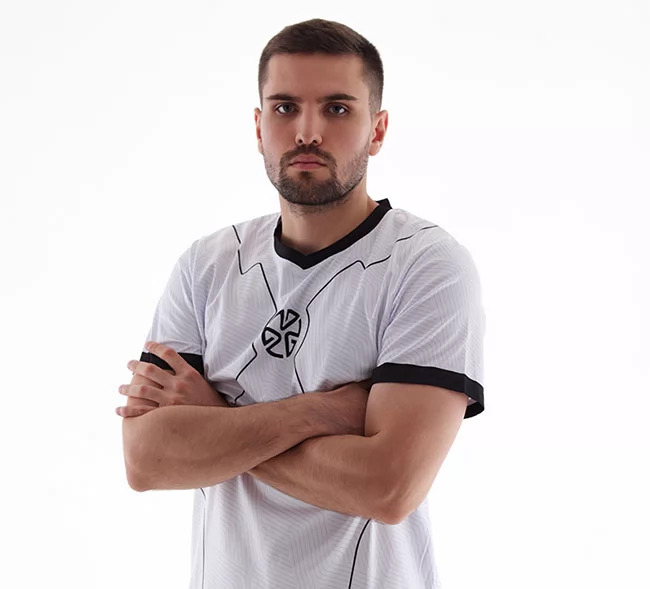
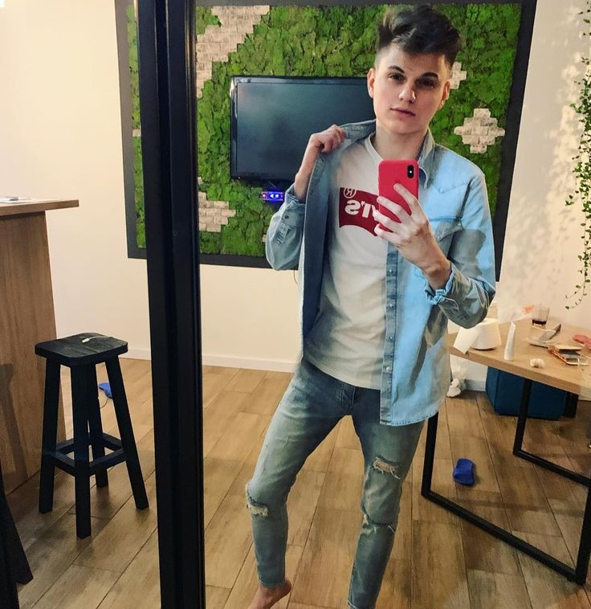

Обери гру та вкажи час
Обери гру, фокус практики та кількість матчів або доступний час.
Перший кіберспортивний хаб Західної України. Персональні AI-плани тренувань, заняття з професійними наставниками та прозорі звіти прогресу для батьків у єдиній екосистемі.
Навчальна концепція. Зараз доступні калькулятор часу й практичні матеріали; AI-плани, звіти прогресу та заняття з наставниками — напрями подальшого розвитку.
Простий шлях від вибору гри до конкретних рекомендацій. Жодної зайвої теорії, лише практика.
Обери гру, фокус практики та кількість матчів або доступний час.
Побачиш тривалість вправ, матчів, очікування, аналізу та перерв.
Скоригуй параметри або завантаж план. Висновки після заняття записуй самостійно.
Порахуй час одного заняття та тижня: вправи, повні матчі, аналіз, очікування й перерви.
За кількістю матчів або за доступним часом — обери свій режим у калькуляторі.
2 год 25 хвповна тривалість одного заняття
Обери фокус практики та задай тривалість блоків. Структуру можна змінити перед наступним заняттям.
Порівнюй повний час із часом вправ, матчів та аналізу. Очікування й перерви враховані окремо.
Повернися до параметрів після практики й уточни свій план. Історія виконання на сайті не зберігається.
Планування допомагає обговорювати навантаження, відпочинок і навчання разом із дитиною
Пояснюємо ігри та кіберспорт простою мовою. Без обіцянок швидкої кар’єри.
Час завершення, паузи, покупки й чат. Спільні домовленості починаються з розмови.
Запитайте про мету заняття й висновки після нього. Результат матчу — лише частина історії.
Тренування, навчання й відпочинок — в одному тижні. Переглянь приклад розподілу часу між щоденними справами.
Виділяй окремий час для гри та цільових вправ, залишаючи місце для навчання й інших справ.
Враховуй сон, перерви та фізичну активність. Відпочинок — така сама частина тижня, як тренування.
Діаграма допомагає порівняти категорії часу. Наведені 168 годин — умовний приклад, а не персональний результат.
Демонстраційні профілі показують вигляд майбутнього каталогу. Наявність тренерських послуг і співпрацю з проєктом не підтверджено; доступні посилання на ігрові канали.
Віталій Цаль · Папич
Стример і автор ігрового контенту, відомий під ніком Папич. Став популярним завдяки трансляціям Dota 2.

Ink Mate
Стример Counter-Strike. На каналі — матчі, спілкування з глядачами та контент навколо змагальної гри.

stariy_bog
Стример Dota 2. Транслює власні матчі та коментує події на кіберспортивній сцені.
Михайло Лебіга · leb1ga
Український стример Михайло Лебіга. Створює розмовний контент і проводить спільні з глядачами перегляди матчів Counter-Strike 2.
Статті для гравців та батьків: як тренуватися ефективно, як планувати час і як підтримувати розвиток дитини.
Прості принципи, які допомагають тримати форму і не втрачати мотивацію.
Читати далі : Як тренуватися ефективно без вигоранняЧому паузи важливі для прогресу і як їх правильно планувати.
Читати далі : Гра і відпочинок: як знайти рівновагуЯк підтримати дитину і допомогти їй розвиватися без шкоди.
Читати далі : Що варто знати батькам про кіберспортРозрахунок ігрового часу допомагає тренуватися розумно й відпочивати вчасно.
Львів — місто навчального проєкту. На карті показано загальний огляд міста, а не адресу академії